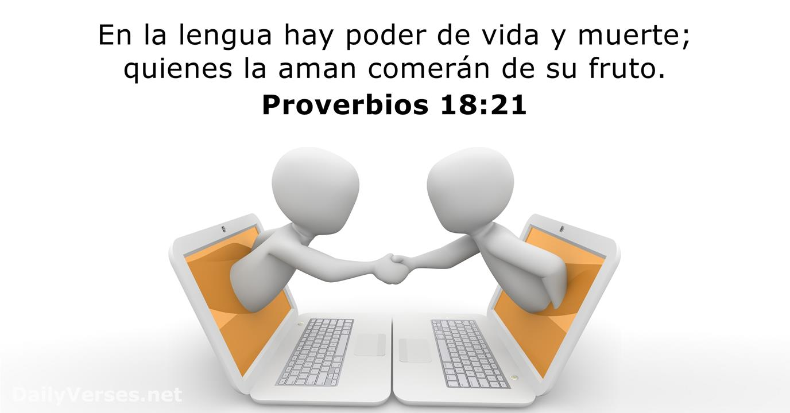

TALLER INTEGRADO
TEXTO EN INGLES
RULE #1:
TREAT OTHERS THE WAY YOU WISH TO BE TREATED The gud old Golden Rul says it all: empathy, tolerans and pis. dis principl teaches Yu to love yurself and love ouders. It spans couldters and faiths and is a iuniversal eig old concept with can’t fail!
RULE #2:
LISTEN TO HEAR WHAT OTHERS HAVE TO SAY, NOT TO SPEAK Engage in dialogue with an open mind and the real will to listen to others. Only then will you be able to understand each other and build bridges. Change cannot happen and peace cannot be established if people are unable to communicate with others; to listen to their experiences and views and show empathy, understanding and compassion.
RULE #3:
ACCEPT DIFFERENCE OF OPINION We all have different opinions and we may not all agree on the same things. Building compromise and mutual understanding is incredibly important. Sometimes we simply need to agree to disagree and recognise that there are different beliefs and forms of expression other than our own.
RULE #4:
DO NOT FIGHT VIOLENCE WITH VIOLENCE Violence is never the answer. Peace can only be brought through free will, dialogue, empathy and forgiveness. Do not stoop to same level as someone who is violent and therefore continue the vicious cycle. This does not change anything.
RULE #5:
ACCEPT THAT IDENTITY IS FLUID Any one person can have multiple aspects to their identity. Identity comprises many elements such as nationality, cultural-linguistic origin, age and religious beliefs. Identity can and does change, taking on many new forms and means of personal expression as we learn new languages, move home, adopt new beliefs, marry into a different tradition and experience life! Do not put people into a box. Avoid categorising people according to an us vs. them narrative and remember: we are all singular individuals with unique experiences. Such approaches and narratives are highly divisive and unproductive.
RULE #6:
AVOID STEREOTYPES Take people for the individuals they are. Avoid misconceptions, stereotypes and toxic narratives and get to know a person instead. This will avoid offence, misunderstandings and ultimately help you to create a real bond with others based on true understanding, empathy and trust. After all, no one likes to be judged – especially from the outsid
RULE #7:
APPROACH THE MEDIA WITH SKEPTICISM Don’t just believe everything you see on the TV, in the newspapers or on the internet. Think objectively for yourself. Get to know the people and facts behind any story and don’t fall for media scapegoating. Stand united.
RULE #8:
BE CAREFUL OF THE LANGUAGE YOU USE Your choice of language, alongside tone of voice and intonation all convey a message. Make sure that that message is positive. Be mindful of the language you use, avoiding anything with misogynistic, racist, Islamophobic, homophobic or anti-Semitic overtones. Do not underestimate the power of language – for better or for worse! And remember, it’s not always what you say, it’s how you say it.
TRADUCCION
REGLA #1
TRATAR A LOS DEMÁS COMO DESEAS SER TRATADO La buena y vieja regla de oro dice todo: empatía, tolerancia y paz. Este principio enseña que te ames y ames otros. Abarca culturas y religiones y es una era universal ¡Viejo concepto que no puede fallar!
REGLA #2
ESCUCHE PARA ESCUCHAR LO QUE OTROS TIENEN DECIR, NO HABLAR Entablar un diálogo con la mente abierta y la voluntad real de escuchar a los demás. Sólo entonces podrás entendernos y tender puentes. Cambiar Esto no puede suceder y la paz no puede establecerse si las personas no pueden comunicarse con los demás; a Escuche sus experiencias y puntos de vista y muestre empatía, comprensión y compasión.
REGLA #3
ACEPTAR LA DIFERENCIA DE OPINIÓN Todos tenemos opiniones diferentes y podemos No todos estamos de acuerdo en las mismas cosas. Edificio El compromiso y el entendimiento mutuo son increíblemente importante. Algunas veces nosotros simplemente hay que aceptar o no estar de acuerdo y Reconocer que existen diferentes creencias. y formas de expresión distintas a las nuestras. Propio.

REGLA #4
NO COMBATE LA VIOLENCIA CON VIOLENCIA La violencia nunca es la respuesta. La paz puede sólo se logrará a través del libre albedrío, el diálogo, empatía y perdón. No te rebajes a mismo nivel que alguien que es violento y Por lo tanto, continúa el círculo vicioso. Este no cambia nada.
REGLA #5
ACEPTAR QUE LA IDENTIDAD ES FLUIDA Cualquier persona puede tener múltiples aspectos en su identidad. La identidad comprende muchos elementos como nacionalidad, origen cultural-lingüístico, edad y religión creencias. La identidad puede cambiar y de hecho cambia, asumiendo muchos nuevas formas y medios de expresión personal a medida que aprender nuevos idiomas, mudarse a casa, adoptar nuevas creencias, ¡Cásate con una tradición diferente y experimenta la vida! Hacer No poner a la gente en una caja. Evite categorizar a las personas según una narrativa de nosotros contra ellos y recuerde: todos somos individuos singulares con experiencias únicas. Tales enfoques y narrativas son altamente divisivos y Improductivo.
REGLA #6
EVITAR ESTEREOTIPOS Llevar a la gente por el individuos que son. Evitar conceptos erróneos, estereotipos y narrativas tóxicas y obtener conocer a una persona en su lugar. Esto evitará ofensas, malentendidos y en última instancia te ayudará a crear un vínculo real con los demás basado en la verdadera comprensión, empatía y confianza. Después de todo, A nadie le gusta que lo juzguen – especialmente desde el exterior
REGLA #7
ACÉRQUESE A LOS MEDIOS CON ESCEPTICISMO No creas todo lo que ves en la televisión, en los periódicos o en La Internet. Piensa objetivamente para tú mismo. Conozca a la gente y hechos detrás de cualquier historia y no caer para convertir a los medios en chivos expiatorios. Pararse Unido.
REGLA #8
TEN CUIDADO CON EL IDIOMA QUE USTED USA Tu elección de idioma, junto con el tono de voz. y la entonación transmiten un mensaje. Cerciorarse que ese mensaje es positivo. Tenga en cuenta el lenguaje que utilizas, evitando cualquier cosa que tenga misógino, racista, islamófobo, homofóbico o connotaciones antisemitas. No subestimar El poder del lenguaje – ¡para bien o para mal! Y recuerda, no siempre es lo que dices, así es como lo dices.

FRASES EN PASADO SIMPLE Y PRESENTE PERFECTO
FRASE #1
Simple past: I treated others as I wished to be treated. Present perfect: I have treated others as I wish to be treated.
FRASE #2
Simple past: I listened to speak what others had to say. Present perfect: I have listened to speak what others have to say.
FRASE #3
Simple past: I accepted the difference of opinion. Present perfect: I have accepted the difference of opinion.
FRASE #4
simple past: I didn't combat violence with violence. present perfect: I haven't combated violence with violence.
FRASE #5
Simple past: I accepted that identity was fluid. Present perfect: I have accepted that identity is fluid.
FRASE #6
Simple past: I avoided stereotypes. Present perfect: I have avoided stereotypes.
FRASE #7
Simple past: I approached the media with skepticism. Present perfect: I have approached the media with skepticism.
FRASE #8 Y ULTIMA
Simple past: I approached the media with skepticism. Present perfect: I have approached the media with skepticism.